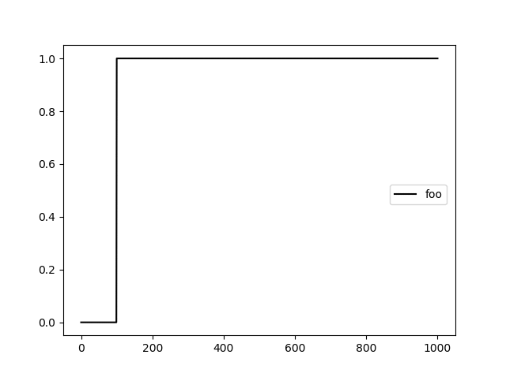

Generating Data
RHEOS has several convenience functions for generating arbitrarily complex loading patterns. These may be particularly useful for investigating the responses of viscoelastic models with which users are unfamiliar. This section will demonstrate how to use them.
It should be noted at the outset that the way these functions are currently implemented, they generate the same loading in both stress and strain with the expectation that users will then use one or other to make predictions. If it is detected that stress and strain are not the same arrays, or use different sample rates, then these data generation functions will raise an error.
As all the structs generated are of RheologyData type, the same addition, subtraction and multiplication overloaded methods can be used for real data. When adding two RheologyData structs and one is longer than the other (in time), the shorter one will be extended by keeping the last values of that shorter struct's data constant for the rest of time. Adding, subtracting and multiplying will raise an error if the data do not have the same sample rate. All plots here are generated using the PyPlot Julia package.
Step, Ramp and Oscillatory Loading
The code below uses stepgen to create one step starting at 100 seconds (with total duration of 1000 seconds) and another step starting at 500 seconds lasting the same total duration. The second step is then subtracted from the first to create a new combined loading pattern as shown in the plots below.
foo = stepgen(1000.0, 100.0)
bar = stepgen(1000.0, 500.0)
baz = foo - bar